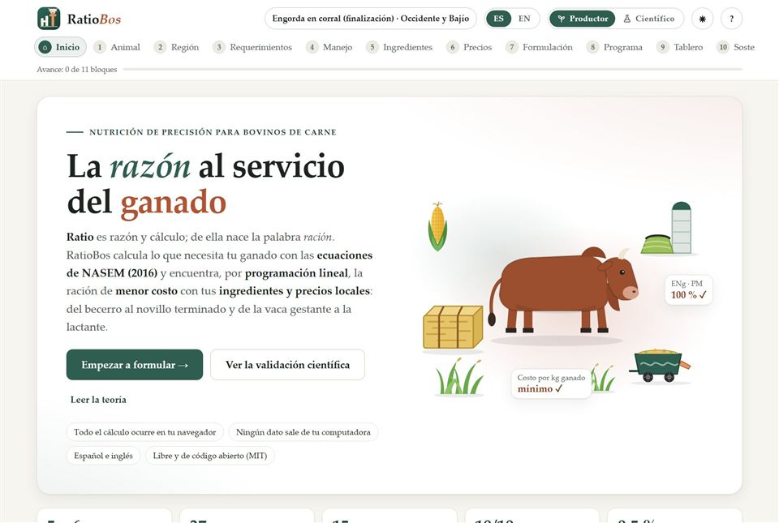

Bovinos de carneBeef cattleRatioBos
Raciones para becerros, engorda en corral, vaquillas y vacas de cría, con el clima de tu región de México.
Rations for calves, feedlot cattle, heifers and beef cows, with the climate of your Mexican region.
- NASEM (2016): energía neta y proteína metabolizable
- Mapa de 9 regiones, ITH y precios regionales
- Programa de engorda, tablero y huella ambiental
- NASEM (2016): net energy and metabolizable protein
- Map of 9 regions, THI and regional prices
- Feeding program, dashboard and footprint